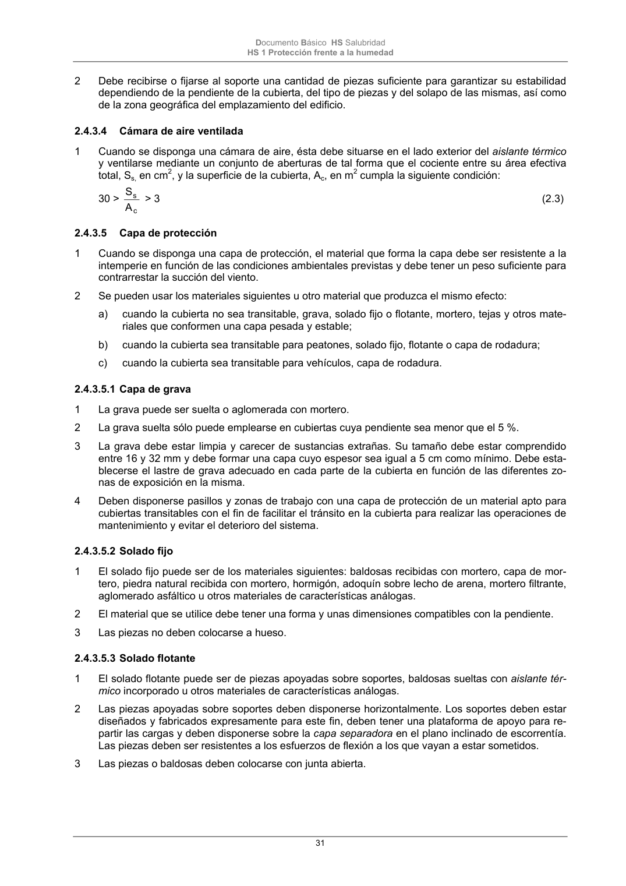

DB-HS Salubridad · edición 2022-06-14 · capa oficial
Documento DB-HS-oficial · SHA-256 del PDF 68df3caacc95f71aee2ec1ba7b2c65ae66155c21e3a8785521b8fdd4fd640d3b
Copia fiel del PDF fuente · Fuente oficial
Ficha de la disposición en la fuente oficial
Formatos: JSON del segmento · Markdown
2.4.3.5.3 Solado flotante 1 El solado flotante puede ser de piezas apoyadas sobre soportes, baldosas sueltas con aislante tér- mico incorporado u otros materiales de características análogas. 2 Las piezas apoyadas sobre soportes deben disponerse horizontalmente. Los soportes deben estar diseñados y fabricados expresamente para este fin, deben tener una plataforma de apoyo para re- partir las cargas y deben disponerse sobre la capa separadora en el plano inclinado de escorrentía. Las piezas deben ser resistentes a los esfuerzos de flexión a los que vayan a estar sometidos. 3 Las piezas o baldosas deben colocarse con junta abierta. Documento Básico HS Salubridad HS 1 Protección frente a la humedad 32
